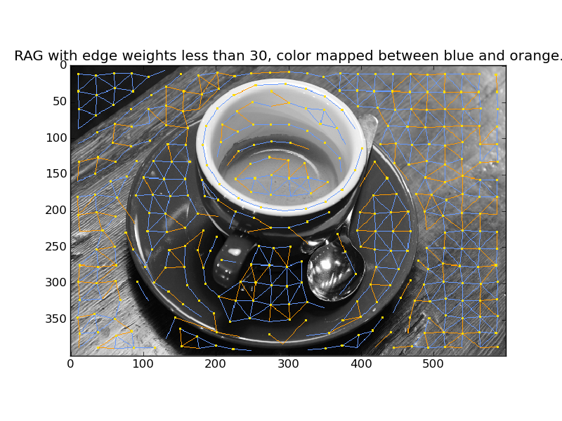

This example constructs a Region Adjacency Graph (RAG) and draws it with the rag_draw method.
from skimage import data, segmentation
from skimage.future import graph
from skimage.util.colormap import viridis
from matplotlib import pyplot as plt, colors
img = data.coffee()
labels = segmentation.slic(img, compactness=30, n_segments=400)
g = graph.rag_mean_color(img, labels)
out = graph.draw_rag(labels, g, img)
plt.figure()
plt.title("RAG with all edges shown in green.")
plt.imshow(out)
# The color palette used was taken from
# http://www.colorcombos.com/color-schemes/2/ColorCombo2.html
cmap = colors.ListedColormap(['#6599FF', '#ff9900'])
out = graph.draw_rag(labels, g, img, node_color="#ffde00", colormap=cmap,
thresh=30, desaturate=True)
plt.figure()
plt.title("RAG with edge weights less than 30, color "
"mapped between blue and orange.")
plt.imshow(out)
plt.figure()
plt.title("All edges drawn with viridis colormap")
out = graph.draw_rag(labels, g, img, colormap=viridis,
desaturate=True)
plt.imshow(out)
plt.show()
Python source code: download
(generated using skimage 0.12.2)
IPython Notebook: download
(generated using skimage 0.12.2)
 Source
Source